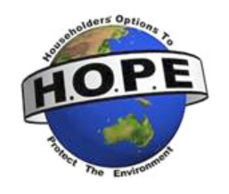

HOPE aims to raise awareness of, and encourage active participation in, waste minimisation and the conservation of energy and resources. HOPE encourages people to take responsibility for their relationship with the environment in their daily lives.
HOPE members strive to:
as little as possible of energy and resources;
create minimal pollution, both directly and indirectly;
prefer, in general, renewable to non-renewable, natural to manufactured, and local to imported;
support and promote ’best practice’ natural resource management and landcare activities.

HOPE (Householders’ Options to Protect the Environment) encourages people to take responsibility for protecting and enhancing the environment in their everyday lives. HOPE members and supporters have the following aims:
To use a little as possible of energy and resources.
To create minimal pollution, both directly and indirectly;
To prefer, in general, renewable to non-renewable, natural to manufactured, and local to imported; and
To support and promote ‘best practice’ natural resource management and landcare activities.